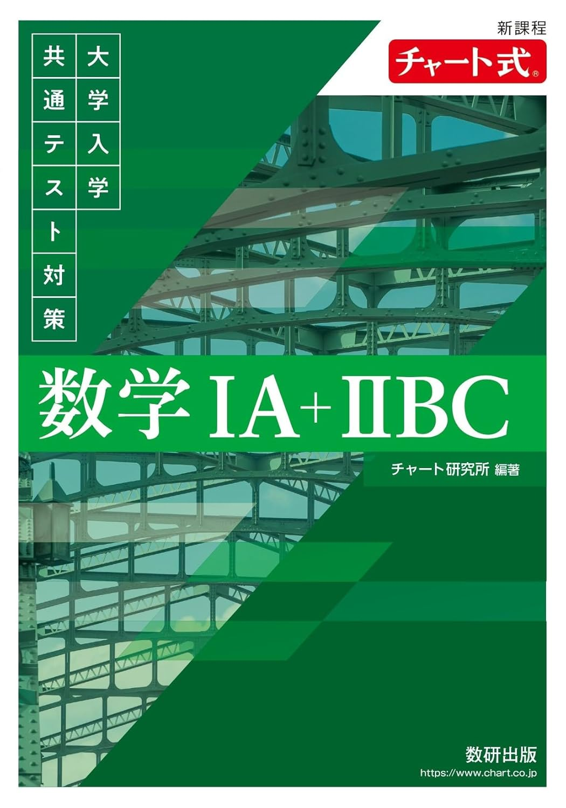

← ポータルに戻る
新課程 チャート式 大学入学共通テスト対策 数学IA+IIBC
全659ページ

数学Ⅰ
p.13–87
▶
1
第1章 数と式, 集合と命題
p.13
2
第2章 2次関数
p.28
3
第3章 図形と計量
p.49
4
第4章 データの分析
p.66
数学A
p.88–131
▶
1
第5章 場合の数と確率
p.88
2
第6章 図形の性質
p.115
数学Ⅱ
p.132–224
▶
1
第7章 式と証明, 複素数と方程式
p.132
2
第8章 図形と方程式
p.150
3
第9章 三角関数
p.167
4
第10章 指数関数・対数関数
p.184
5
第11章 微分法・積分法
p.200
数学B
p.225–266
▶
1
第12章 数列
p.225
2
第13章 統計的な推測
p.247
数学C
p.267–310
▶
1
第14章 ベクトル
p.267
2
第15章 平面上の曲線と複素数平面
p.286
その他
p.311–659
▶
1
実践模試
p.311
2
指針一覧
p.348
3
答の部
p.370